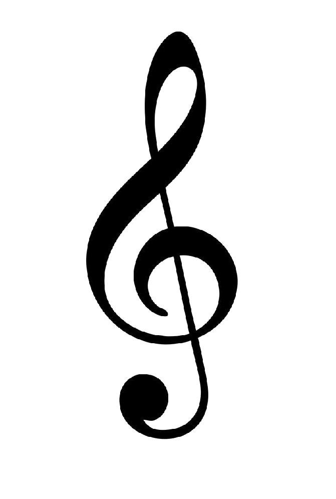
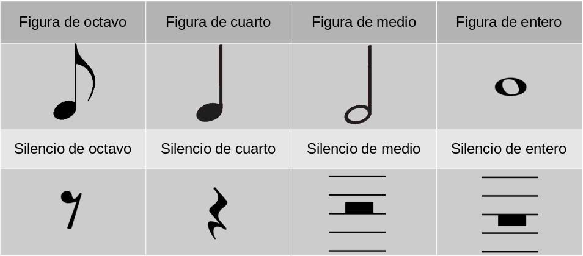
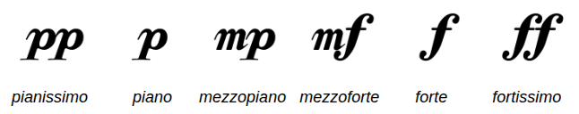
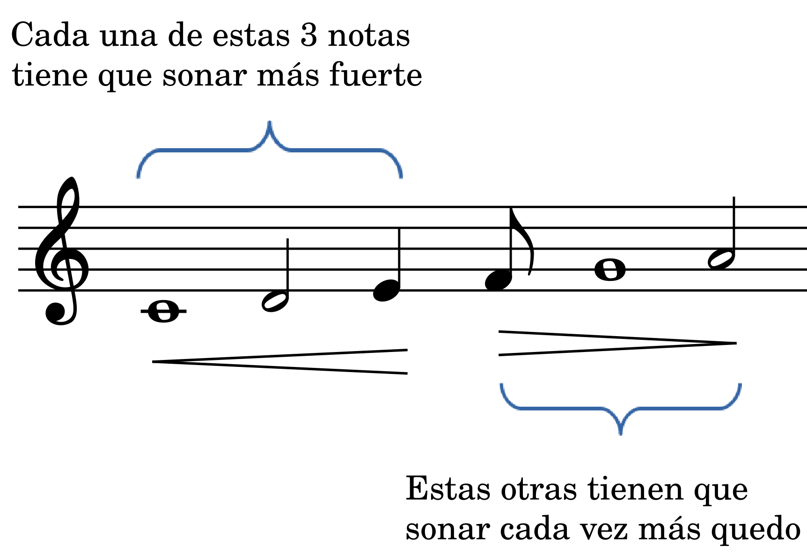
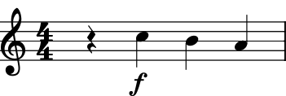
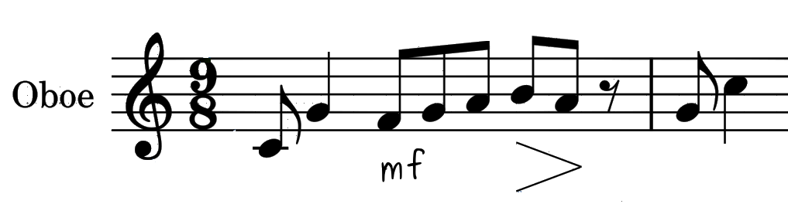
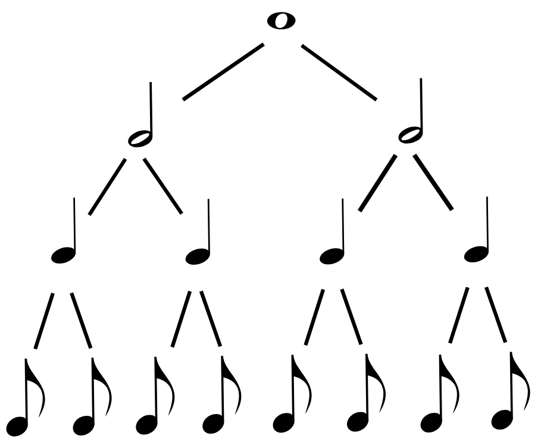
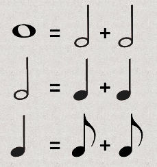

Símbolos musicales para cada propiedad del sonido
El sonido tiene 4 propiedades: El tono, la intensidad, el timbre y la duración.
Cada una de estas propiedades es representable con símbolos musicales y son lo que a continuación se describen.
El tono, se representa con el pentagrama, la clave y las figuras:


Y estos símbolos juntos se ven así:

Para la intensidad solamente se utilizan letras y los símbolos de "mayor que" y "menor que":

"mayor que" representa una disminución gradual de la intensidad del sonido, mientras que "menor que" representa un aumento en la intensidad del sonido.
Juntos estos símbolos se ven así:


Para el timbre solamente se utiliza el nombre de la fuente sonora, es decir, del instrumento que produce el sonido:
Y como ves, se coloca antes del pentagrama, aunque a veces se escribe en la parte de arriba.
Para la duración tenemos los siguientes símbolos: Le cifra o indicación de compás y las figuras, que ya conoces:
Y se colocan en el pentagrama así:
Cada uno de estos números proporciona una información diferente, pero muy importante para poder interpretar la música escrita:
El numerador nos indica el número de tiempos o pulsos que debe de tener cada compás.
El denominador nos indica el nombre de la figura que debe de durar un tiempo.
Todos los símbolos anteriores se ven así:

Ahora, las figuras que ayudan a graficar dos propiedades del sonido, el tono y la duración tienen un relación de valor; es decir, hay figuras que son más grandes que otras. La siguiente tabla muestra esta relación:

También se puede escribir de esta manera:

En cualquiera de las dos maneras de escribir la relación entre las figuras, siempre la figura entero será la de mayor valor y el octavo, la de menor valor.
Esto está estrechamente relacionado con la duración, de tal forma que la figura de mayor duración es el entero, mientras que el octAvo será la de menor duración SIEMPRE Y CUANDO SE HAYA COLOCADO LA CIFRA DE COMPÁS. Ninguna figura dura nada, si no tiene una cifra de compás, esto es muy importante.